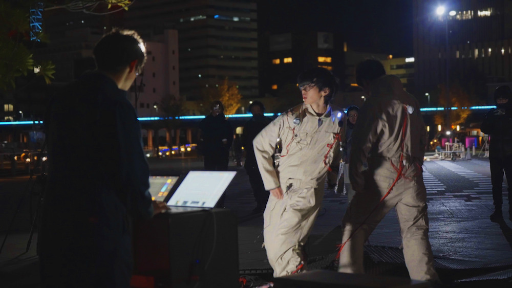

Overview
- Artist: Takuma Kikuchi, Riki Saito, Risako Shibata, Atsuya Tsuchida
- Format: Dance Performance
- Year: 2025
Concept
本作品は、振動情報を基に、2人のパフォーマーが姿勢を交互に模倣し合うことで展開されるパフォーマンス作品である。2人それぞれの身体的特性やその差異、そして模倣の反復による動きの堆積が、意図しない動きや音を創発する点を特徴とする。
従来の身体表現研究が個々の主体的制御を前提としてきたのに対し、本作では複数の身体間に生じる制約や差異そのものを創発の要因として扱う。姿勢センシングと触覚振動システムを通じて生成される音は、模倣の過程で生じる身長差や柔軟性の違いといった身体的制限を取り込みながら変容し、新たな動きと音の連鎖を生み出す。
本作品は、模倣という行為と身体の制約が音楽パフォーマンスに与える影響を探求する試みである。
Tools
- Software: Ableton Live, Max for Live, Unity, Arduino
- Hardware: Arduino, Exciter, Contact Microphone
Exhibition
- 2025/6/26 - NIME2025 @オーストラリア・Australian National University
- 2025/06/14 - 図譜 organized by SjQ @神戸元町・space eauuu
- 2024/12/6 - 2024/12/8 - ZOU-NO-HANA FUTURESCAPE PROJECT 2024 ＠横浜・象の鼻パーク